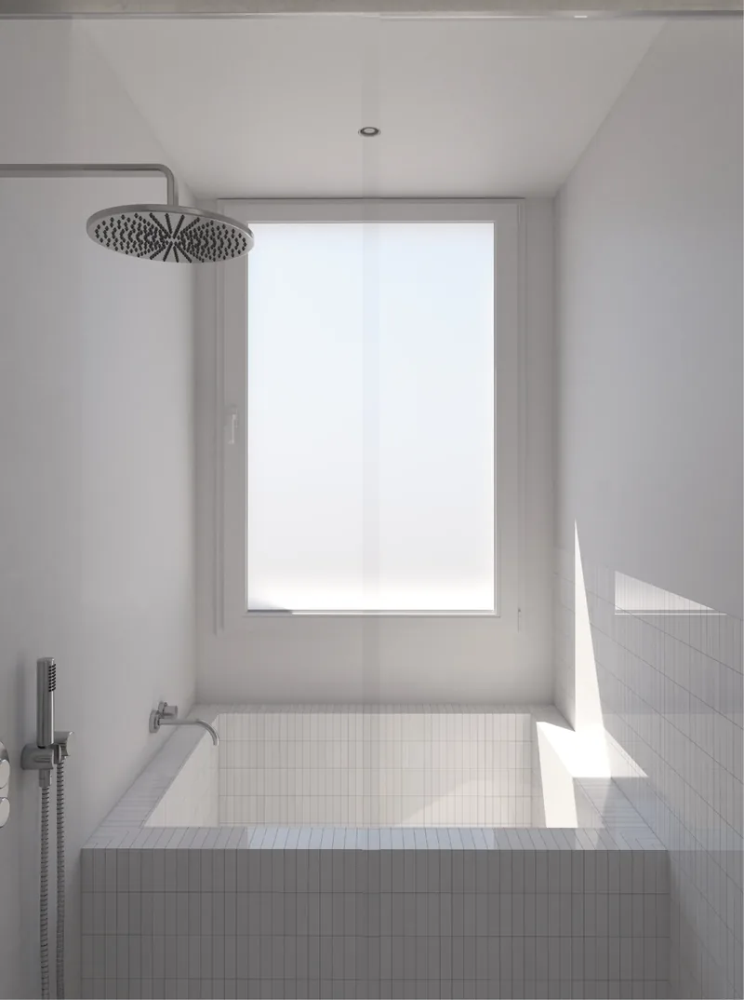
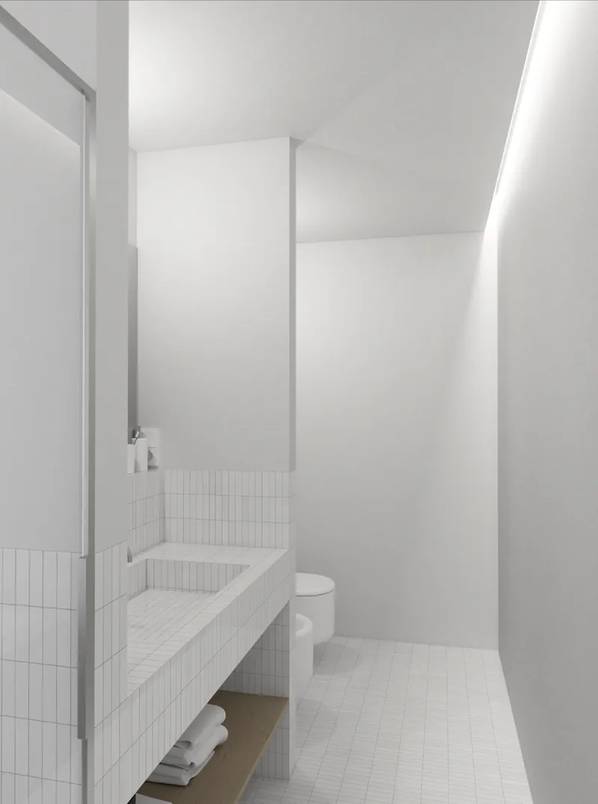

Pratiche edilizie e direzione lavori
Un buon progetto deve arrivare in cantiere senza perdere qualità. Lo studio si occupa delle pratiche edilizie e della direzione lavori, così il progetto resta nelle stesse mani dall'idea alla consegna.
Pratiche edilizie
Ogni intervento richiede il titolo edilizio adatto. In generale:
- Edilizia libera: manutenzione ordinaria, come tinteggiature o sostituzione dei pavimenti, senza pratiche.
- CILA: manutenzione straordinaria che non tocca le parti strutturali, per esempio spostare tramezzi o rifare gli impianti.
- SCIA: interventi sulle parti strutturali dell'edificio, restauro e risanamento conservativo, alcune ristrutturazioni.
- Permesso di costruire: nuove costruzioni e ristrutturazioni più consistenti.
Il titolo giusto dipende dall'edificio, dai lavori e dai regolamenti del Comune, e si verifica caso per caso. Per gli edifici vincolati serve anche l'autorizzazione della Soprintendenza (vedi centri storici e siti UNESCO).
Direzione lavori
Il direttore dei lavori controlla che il cantiere segua il progetto e le autorizzazioni, verifica la qualità delle lavorazioni, risolve con le imprese i problemi che emergono e accompagna il cliente fino alla fine dei lavori.
Progetti

Appartamento

Appartamento

Appartamento

Bar e ristorante
Parliamo del tuo progetto
Scrivi a info@samuelesilvestriarchitetto.com o chiama il +39 366 493 8286. Lo studio è a Modena, in via Asiago 58, e segue progetti in tutta Italia.